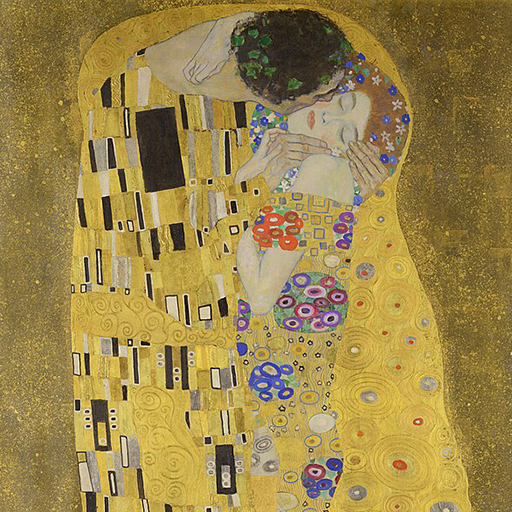

Hexagram 31 – Xian: Mutual Attraction
Upper: Lake (☱) · Lower: Mountain (☶)

Core Meaning
This is a time of connection and mutual response. The strongest bonds grow from sincere interaction, not pressure. Stay open, notice what is real, and let closeness develop naturally.
“I stay open to genuine connection and let it unfold naturally.”
Blessing
May you meet people who understand you without forcing the connection.
Guidance by Life Area
Love
Mutual attraction is easier to feel now. Respond openly, notice the other person’s needs, and let closeness deepen without forcing it.
Notice the other person and respond openly:
- Let the connection flow naturally.
- Act when the timing feels right.
Career
Communication and cooperation can flow well. Share ideas, listen closely, and use moments of mutual understanding to build stronger partnerships.
Share ideas and listen well:
- Build on moments of mutual understanding.
- Capture useful ideas quickly.
Health
Emotions can affect your body quickly. Notice where stress appears first and use breathing, rest, or relaxation to reset.
Notice your body’s stress signals:
- Use breathing and relaxation.
- Care for your body before overthinking.
Finances
Stay alert to changing trends, but test intuition against facts. Useful opportunities may also emerge through conversations and relationships.
Watch trends without relying on intuition alone:
- Check impressions against facts.
- Notice useful information from others.
Relationships
You may connect with people easily now. Be genuine, listen beneath the words, and move closer to people who feel naturally compatible.
Join conversations and be yourself:
- Listen for the feeling behind the words.
- Move toward compatible people.